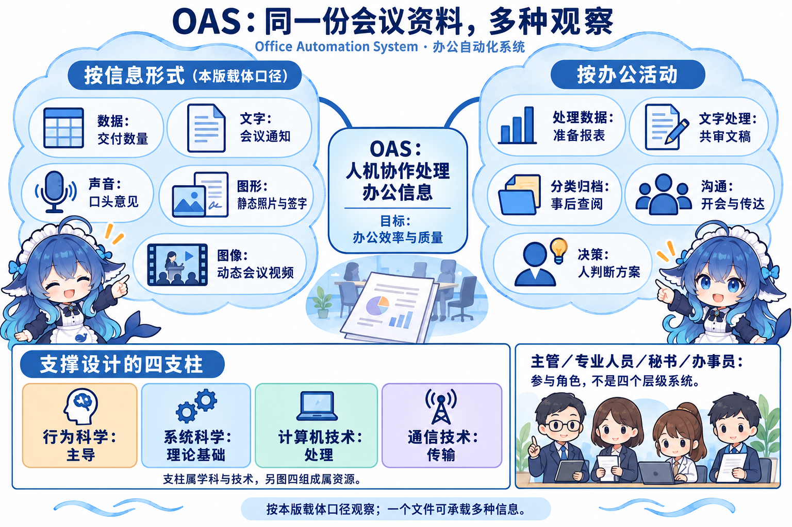
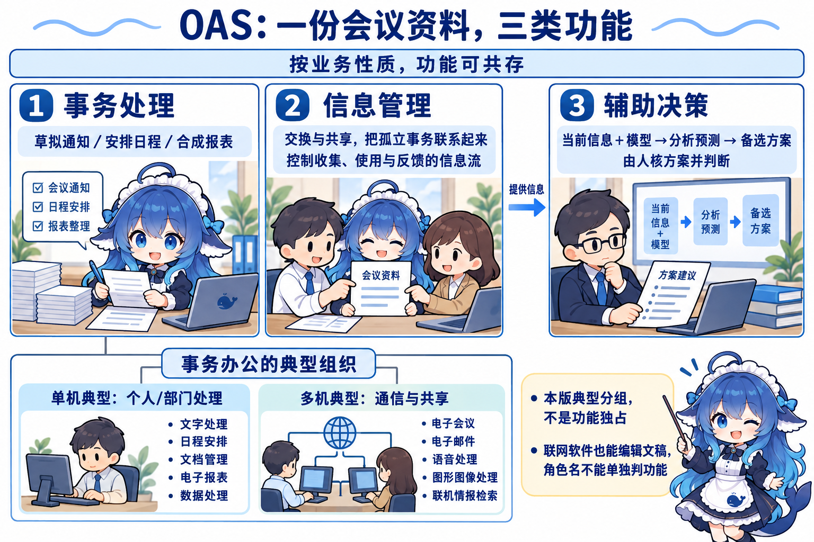
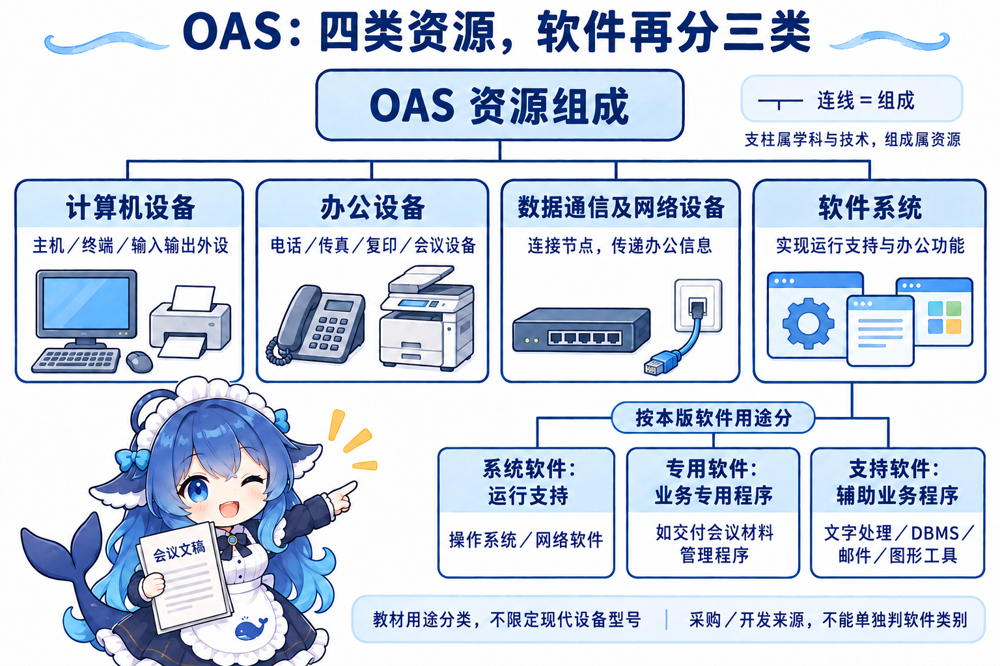

青木家具厂要开周一交付协调会。订单已经登记，车间也有异常记录。秘书需要发通知、排日程，销售与生产要共同审阅会议材料，财务准备方案比较，主管作出决定后还要传达和归档。会议文稿既有交付数量，又有文字说明、照片和口头意见。把这些信息及人员协作组织起来，是 OAS（Office Automation System，办公自动化系统）本节要解决的问题。OA（Office Automation，办公自动化）说的是处理手段的自动化，OAS 则指具体的人机信息处理系统。
同一份资料能经历多种办公活动。按什么观察，决定了怎样分类：活动说明人在做什么，功能说明系统支持什么，支柱说明设计依据，组成说明有哪些资源。下面按教材三个正式小小节展开这几条线，所有家具厂细节均为自编教学情境。
3.6.1 办公自动化系统的概念：把信息与人一起组织起来
办公是处理群体公务的活动，办公室承担管理信息的任务。起草、批阅、发布文件，传达批示，开会以及分析判断都在其范围内。OAS 借助设备和软件协助办公人员管理信息，提高办公效率与质量。名称里的“自动化”不意味着每项判断都交给机器；谁提供资料、谁审阅、谁使用结果仍要安排。
同一资料的载体、活动和参与人
本版按信息形态列出数据、文字、声音、图形、图像。交付数量属于数据，会议通知是文字，口头意见是声音；照片、公章和签字是静态图形，会议视频属于其动态图像一类。这是教材的载体分法。现代技术文档里的 image 也可指静态图像，不能把本节术语变成普遍的英文词义；一份文稿可以同时承载多种形式。
按办公活动再看这份材料：秘书核数量并准备数字报表，是处理数据；起草、修改、审阅和分发通知，是文字处理；分类存储并建立查阅入口，是分类归档；会议讨论、电话和批示传达，是沟通；主管与专业人员分析利弊并决定行动，是决策。五种活动可以交叠。报表既要处理数据，又会被归档和交流，五种媒体与五种活动没有一一配对关系。
教材观察四类办公人员：主管人员、专业人员、秘书、办事员。主管关注判断和决策；技术、财务、销售等专业人员处理专门问题，也可辅助主管；秘书协助收发、联络和日程；办事员承担复印、邮寄、归档等具体事务。这里描述常见分工。主管也会读文稿，办事员也要沟通，角色名称不直接决定系统类型或软件层数。
四支柱分别回答设计依靠什么
行为科学、系统科学、计算机技术、通信技术是本版 OAS 的四支柱。行为科学为主导，系统科学为理论基础，计算机技术与通信技术结合应用。例如，会议通知有提醒功能，仍需与人员的工作习惯和协作安排配合；把信息的输入、使用和反馈一起考虑，是系统视角；设备负责处理，通信负责传递。四支柱是知识与技术领域，随后讲的四组成是系统资源，不能因数量相同就对应成四个部件。
教材用 20 世纪 50 年代电子打字机、70 年代文字处理机和 80 年代办公系统的发展说明手段从简单到复杂、从单功能到多功能，逐步向系统化、综合化、数字化、标准化、智能化和网络化发展。这段历史描述工具发展，并未规定企业必须依次安装几代产品，也不把 TPS、MIS、DSS、ES、OAS 排成替代链。




3.6.2 办公自动化系统的功能：资料准备、共享和方案支持
按业务性质，教材列三功能：事务处理、信息管理、辅助决策。秘书准备通知与报表，部门交换和使用资料，主管利用分析结果作决定，可以在同一平台同时得到支持。教材的功能分组不要求部署三个独立系统，也不规定每个人只能使用其中一类。
重复办公事务，以及单机与多机的典型组织
事务处理支持草拟文件、打字文印、数据汇总、报表合成、日程安排和会议组织等繁杂、反复出现的工作。通知准确产生、日程提醒及时、材料方便查取，都是具体结果；是否完成要核实际功能，不能由“OAS”名称保证。
本版将事务办公系统按组织方式分成单机与多机。单机系统的五项典型功能是：文字处理，负责起草、修改、编辑、存储和输出，办公活动还包括审阅、分发与收缴文稿；日程安排，组织个人或部门计划，并提醒、提示或警告；文档管理，登录收发、批示与检阅，分类建目录、主题词索引，追踪查阅并自动提示；电子报表，按格式输入、加工、计算和输出；数据处理，采集、计算、存储人事、工资、财务、车辆、用品等办公数据，可用数据库管理系统构造小型办公事务数据库。
多机系统的五项典型功能突出通信和共享：电子会议支持日程、材料检索、发言记录与纪要；电子邮件支持文档与资料的编辑、收发、存储和传递；语音处理支持识别、合成、存储、传输，例如电话会议或语音信箱；图形图像处理支持扫描、传真和电视会议等输入、处理、传输、输出；联机情报检索访问资料数据库以取得相关信息。
这个分支用于读懂本版的典型组织语境。联网文字处理也能编辑通知，个人软件也可能使用本地数据。单机/多机没有限定一项功能永远只能在一侧实现。一个屏幕或一位操作者也不足以证明底层只有一台机器。题干若明确问本版分组，就按其典型功能判断；问实际网络协作时，还要读通信、共享与部署条件。
信息管理让孤立事务发生联系
秘书各自编辑一份材料，销售又保留另一份数量，会议便可能使用不一致的信息。信息管理关注信息流的控制，通过信息交换与共享把孤立事务联系起来。本版称其为管理型办公系统，描述为具有通信和网络能力的分布式处理系统。
它涉及收集、加工、传递、交流、存取、提供、分析、判断、应用和反馈等综合活动。用会议材料举例：取得数量与意见，整理成可用材料，传给有关部门并交流；保存且可查取，向需要的人提供；分析差异并判断，使用结果，再把处理情况反馈给相关人员。这些是活动范围，未规定一个必须按十步顺次执行的算法。共享文件夹已经提供一部分存取和共享能力；若任务还要求统一版本、审阅反馈和材料加工，就继续检查这些要求是否落实，不能直接从“有共享盘”推出全部信息管理完成。
辅助决策的输出是可供判断的方案
当前资料共同使用后，主管希望比较按原计划交付与调整安排两个方案。决策型办公系统可基于信息和可运行的模型进行综合分析、预测发展、判断利弊，形成可选方案。这里借用了 DSS 的数据、模型与人判断视角，但辅助决策功能不证明 OAS 必然包含全部 DSS，也不证明二者互斥。办公协作和方案分析可以由同一产品实现，也可以通过系统接口配合。
“自动做出方案”描述的是方案形成，不能据此取消主管和专业人员对事实、目标及方案的核查。本例仍由人决定行动。教材此段有“经理型办公系统”一词，与前文“管理型”称呼不一致；本册按上下文说明办公信息管理提供信息基础，不另增第四功能，也不建立未经核实的同义词。




3.6.3 办公自动化系统的组成：资源及软件的两个层次
会议资料要输入，文稿要处理，部门之间要传递，应用也要运行。教材列 OAS 四组成：计算机设备、办公设备、数据通信及网络设备、软件系统。这些项说明资源组成，和此前四支柱、四参与角色都不同。
计算机设备包括主机系统、办公终端及输入输出外设，如键盘、语音、手写与图像输入，打印输出等。终端为办公人员提供便捷的用户界面，本版举菜单式提示。办公设备包括电话、传真、电传、复印及轻印刷设备，存储介质和电子会议支持设备等。数据通信及网络设备连接节点，支持快速传递办公信息。软件系统把运行环境与具体办公功能落实到程序。
原文“通常局域网”“超级微机”等以及打印机、光盘、缩微胶片的列举，具有其编写时期的设备语境。本册保留其功能说明，不把历史典型设备型号转成今天的强制采购清单。跨节点会议和共享确实需要通信条件；具体系统怎样部署，要按任务和已有设施核，而非从组成名称猜品牌或性能。
软件三类挂在软件组成项下面
系统软件提供应用的运行支持，本版举操作系统和网络系统软件。专用软件按实际办公业务需求，通过开发方法与工具形成，如本例的会议材料管理程序。支持软件辅助专用程序，包括文字处理、数据库管理系统、邮件和图形图像处理等工具。DBMS（Database Management System，数据库管理系统）在本版这个用途分法中属于支持软件；其他章节按通用软件层次分类时，需要分别说明口径。
软件三类是软件系统内的分组。把支持软件与计算机设备、办公设备和网络设备平列，便少了正确的父项。教材说若干系统与支持工具常通过购买直接使用，专用程序常按业务开发；采购来源不单独决定类别，判断仍看它承担运行支持、业务专用还是辅助处理的职责。




回到周一会议，同一份资料怎样判断
准备通知和日程时，观察重复事务的处理；共审资料时，观察信息交换、共享与使用；比较备选安排时，观察信息与模型怎样形成方案。订单登记还可由 TPS提供业务记录，管理月报可由 MIS支持，专业规则咨询可借助 ES。系统功能分类与具体产品集成分别回答不同问题，一张含数字的办公文稿不能直接改判系统类型。读懂用途，再核人机分工、支柱与组成，便能在换条件时解释选择。